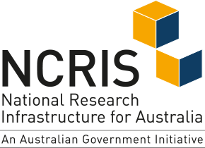

Cross-referencing Tasmanian Terrestrial Ecosystems
![]()
Overview of this document
This document presents a reproducible computational workflow for the analysis and synthesis of cross-referencing information for Tasmanian terrestrial ecosystems. Cross-referencing aims to elucidate relationships between units of classifications that represent similar types of entities , ?sec-process.
In this document the source classification is the TASVEG dataset (Tasmanian Vegetation Monitoring and Mapping Program 2025; Kitchener and Harris 2013) that includes 159 mapping units, most of them representing ecological vegetation communities (see chapter 2 Source classification: TASVEG). These vegetation communities are aligned with the ecosystem concept of the target classification, the IUCN Global Ecosystem Typology (IUCN GET; Keith et al. (2022); see chapter 3 Assess alignment between classifications).
The main body of the document is divided in three parts. The first part includes four chapters dedicated to Data preparation. First, we collect the spatial and ecological information from the source and target classifications 4 Lookup tables for both classifications, and membership tables from five interpreters ?sec-memb-table. Then, we validate and clean the input data, 6 Data validation. Finally, we explore the cleaned dataset with a full membership table including the assessments of the five interpreters in two rounds of interpretation 7 Exploration of the data.
The second part of the document is dedicated to Analysis of the cross-referencing data. We analysed agreement between interpreters and inherent cross-referencing uncertainty for each round of interpretaton 8 Round one, 9 Round two, and compared differences between rounds 10 Between rounds.
The final part of the document presents a synthesis of the cross-referencing information and produces different types of outputs, including, symmary tables and maps.
This online document is a joint output of the ARDC “Ecosystem Indicators Workflows” (EIW) project and the ARC Industry Laureate Fellowship Project “Foundations for leading the nature positive ecosystem conservation agenda”.
You can use the links on the left to navigate through the different sections of this resource.
- All terrestrial ecosystems of Tasmania.
- Selected palustrine wetland and other transitional ecosystems of Tasmania.
Contributions
MT led the expert elicitation process. MT, DAK, AL, AK, and JB contributed membership tables for cross-referencing. JRFP led the technical documentation of all sections of the on-line document. JRFP, EG and ARS contributed scripts for all sections.
Revision history
Version control for this document is maintained in the original GitHub repository.
This document is still work in progress.
| Version | Date | Editor | Summary of Changes |
|---|---|---|---|
| 0.0.5 | 7 Nov 2026 | JRFP, ARS, EG, MGT, DAK | Full structure of the document, benchmarks on reproducibility, preparing outputs, implementation of FAIR kit. |
| 0.0.4 | 1 Nov 2026 | JRFP, MGT | Updated cross-referencing tables, update structure, revised content. |
| 0.0.3 | 23 Oct 2026 | JRFP | Merged contributions and update structure. |
| 0.0.2 | 15 Oct 2026 | EG, ARS | Explore visualisations and draft functions. Add Glossary. |
| 0.0.1 | 13 Aug 2026 | JRFP, MGT | Initial draft and project structure. |
Reproducibility statement
This resource uses Bash and R for steps of data download, preparation and analysis. All steps are documented using Jupyter notebooks and quarto. This resource is designed to be reproducible, with instructions for data download and code execution provided in the relevant sections. The data used in this resource is publicly available, and the code is open source. Instructions for setting up the environment and running the code and notes on the implementation of FAIR principles are provided in the relevant sections at the end of this document.
Acknowledgements
This work was partly supported by:
- the ARC Industry Laureate Fellowship Project “Foundations for leading the nature positive ecosystem conservation agenda” (IL240100030) led by Professor David Keith at UNSW Sydney, in partnership with Department of Climate Change, Energy, the Environment and Water, International Union for Conservation of Nature, Department of Energy, Environment and Water, Department of Biodiversity Conservation and Attractions, Department of Planning and Environment NSW, Department of Natural Resources and Environment Tasmania.
- The Ecosystem Indicators Workflows project received investment from the Australian Research Data Commons (ARDC). The ARDC is funded by the National Collaborative Research Infrastructure Strategy (NCRIS).
